Imperial dentistry
Про клініку
Стоматологічна клініка “IMPERIAL” це сучасна клініка яка оснащена новим медичним обладнанням та укомплектована штатом висококваліфікованих фахівців. Наша місія ‐ забезпечити якісну та безболісну медичну допомогу. Наші спеціалісти працюють з новими системами знеболення ‐ це STA американська система, що не має аналогів серед інших анестезій. За її допомогою пацієнт отримує більш точну ін'єкцію, контрольовану за допомогою комп'ютера. Ми використовуємо найкраще обладнання для імплантації, за допомогою якого ми досягаємо хороших результатів. Наші фахівці використовують та практикують лазерне лікування та відбілювання, використовуючи при цьому лазер Picasso. За допомогою лазера досягаємо хороших результатів щодо збереження зубів від видалення. Також ефект відбілювання від лазера тримається від 4 до 5 років, при цьому Ваша емаль не піддається руйнуванню і найголовніше немає чутливості. Чекаємо вас на консультації.
Записатись до нас на консультацію та прийом
Зв’язатисьУвага акція!
При первинному огляді складаємо план лікування ‐ БЕЗКОШТОВНО.
Увага акція!
Для нових клієнтів за потребою ренген при першому огляді БЕЗКОШТОВНО.
НАШІ ПОСЛУГИ
Ми працюємо для вас
- ШВИДКА ДОПОМОГА
- 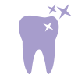 ЕСТЕТИЧНА СТОМАТОЛОГІЯ
- 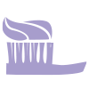 ГІГІЄНА ПОРОЖНИНИ РОТА
- 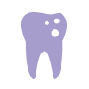 ТЕРАПЕВТИЧНА СТОМАТОЛОГІЯ
- 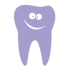 ДИТЯЧА СТОМАТОЛОГІЯ
- 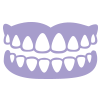 ОРТОПЕДИЧНА
- 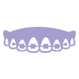 ОРТОДОНТІЯ
- 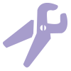 ХІРУРГІЧНА СТОМАТОЛОГІЯ
- 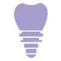 ІМПЛАНТАЦІЯ
- 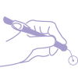 ЛАЗЕРНА СТОМАТОЛОГІЯ
- 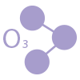 ОЗОНОТЕРАПІЯ
- 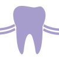 ПАРАДОНТОЛОГІЯ
Часто задавані питання
Як швидше звикнути до зубних протезів?
Середні строки звикання до протезів – тридцять днів. Це фізіологічна норма, прискорення процесу може проходити тільки завдяки вашим індивідуальним особливостям. Якщо ви відчуваєте дискомфорт, необхідно записатися на прийом до стоматолога ортопеда для визначення причини і її усунення.
Що краще – імплантація або протезування? Міст або імплант?
Протезування – це процес заміщення дефектів зубного ряду. Імплантація – це один з варіантів заміщення дефектів зубного ряду, оскільки існує протезування на імплантатах. Тому для визначення, який вид протезування підходить найбільше в тій чи іншій клінічної ситуації, рекомендуємо записатися на консультацію до хірурга–стоматолога та стоматолога–ортопеда. Залежно від Вашого діагнозу, буде обраний і план лікування, в тому числі і система імплантатів і вид протезування. Ми практикуємо завжди індивідуальний підхід до наших пацієнтів.
Як роблять імплантацію? Чим кріплять імплант зуба при установці?
Імплантація – це процес, який складається з декількох етапів:
1й етап – хірургічний, коли в кістковій тканині готується отвір для установки імплантату і безпосередньо встановлюється сам імплантат.
2й етап – хірургічний, коли після закінчення двох місяців після імплантації встановлюється формувач ясен. Імплантат виготовляється з титану або з титану і цирконію. Має спеціальне «різьблення», завдяки якому і відбувається кріплення до кісткової тканини.
Зуби стали чутливими, що робити? Як зняти чутливість зубів, якщо вони болять від холодного і гарячого?
Чутливість зубів може проявлятися при появі мікротріщин в зубах, наявності клиновидних дефектів, патологічної стертості зубів і оголення тканин дентину. У всіх випадках дискомфорту і хворобливості, Вам необхідно терміново пройти обстеження і отримати професійну рекомендацію лікаря стоматолога.
Чи видаляти зуб мудрості? Якщо зуб мудрості запалився, які можуть бути наслідки, якщо його не видалити?
Для видалення зуба мудрості є ряд свідчень, а саме:
Зуб мудрості,який не прорізався і неправильно розташувався в щелепі, травмує сусідні зуби і м'які тканини.
Обширне ураження карієсом зі значним руйнуванням коронки зуба
Установка брекет-системи. Іноді тільки видаленням зуба мудрості можна забезпечити правильне переміщення інших зубів.
Пульпіт, періодонтит
Найчастіше проблеми виникають на етапі прорізування, з якими пов'язано підняття температури тіла, поява припухлості або набряку.
Більш детальну інформацію в кожному індивідуальному випадку вам завжди надасть лікар стоматолог на консультації. Після цього буде прийнято рішення по стоматологічної маніпуляції.